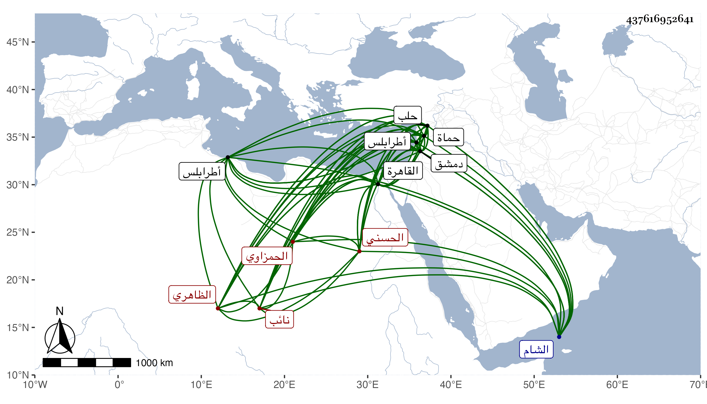

0902Sakhawi.DawLamic.ITO20230111-ara1.EIS1600.437616952641
Biography ID: 437616952641
661
قانباي الحمزاوي . أصله لتنم الحسني نائب الشام ثم لسودون الحمزاوي الظاهري في الدولة الناصرية فأعتقه ونسب إليه وجعله شاد الشربخاناه وبعد موته خدم عند بعض الأمراء ثم عند شيخ فلما تسلطن أمره عشرة ثم طبلخاناه ثم تقدم بعد موته ، وناب في الغيبة لابنه المظفر ثم حبسه الظاهر ططر ثم أطلقه الأشرف وولاه أتابكية دمشق ثم قدمه بالقاهرة ثم نقله لنيابة حماة ثم حوله الظاهر لطرابلس ثم لحلب ثم أعاده مقدما بالقاهرة ثم رجع به إلى نيابة حلب ثانيا ثم نقله الأشرف إينال إلى نيابة دمشق حتى مات في ربيع الآخر سنة ثلاث وستين ودفن بخانقاه تغرى برمش تحت قلعتها وقد ناهز الثمانين وسر الدمشقيون بوفاته لكثرة جنايات مماليكه الذي استكثر منهم جماعة بابه ومع ذلك فهو شديد الإسراف على نفسه سامحه الله .
